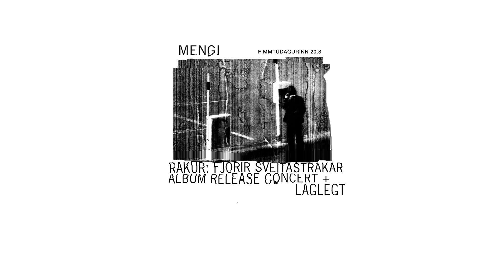
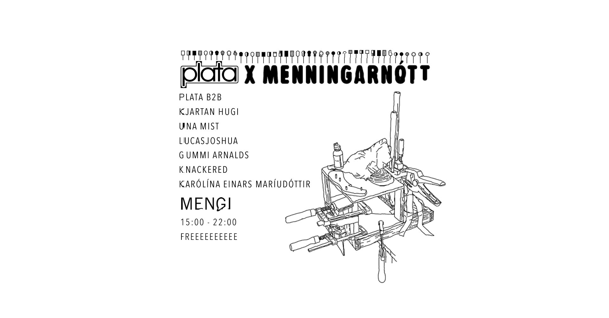
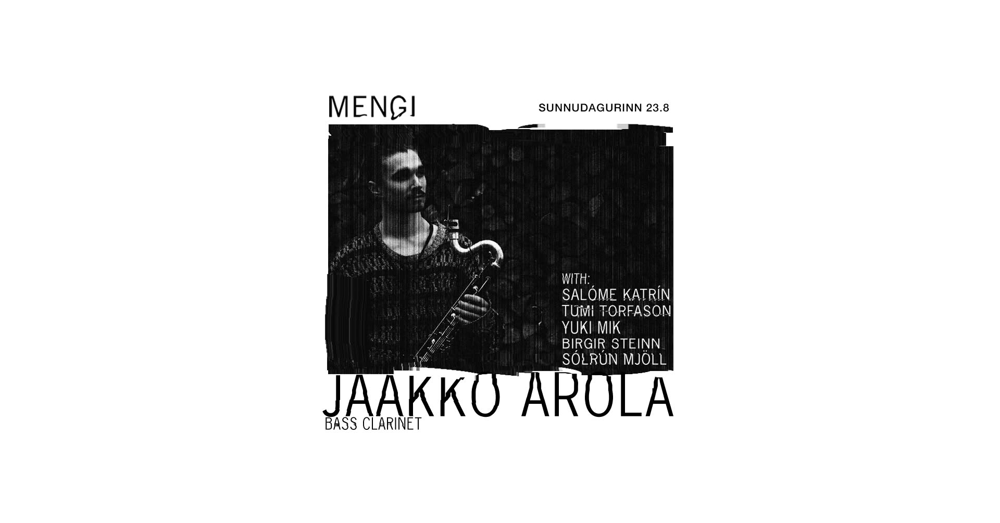
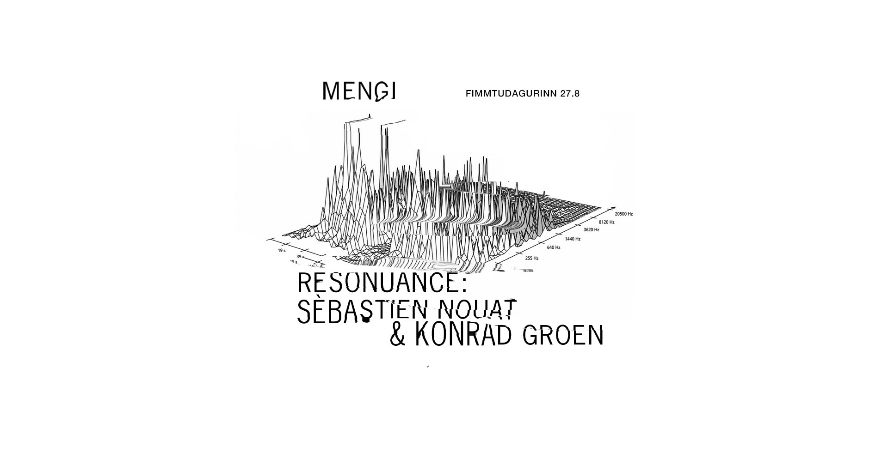

Upcoming Events

THU 20.08 Rakur: Album Release + Laglegt
Tickets Thursday, August 20th RAKUR: FJÓRIR SVEITASTRÁKAR ALBUM RELEASE CONCERT + LAGLEGT doors 19:30 / show 20:00 2500kr / PAY WHAT U CAN Rakur gefur frá sér sína fyrstu plötu og því ber að fagna. Sveitin hefur unnið hörðum síðastliðna ár og er tilbúin að sýna afurð sinn. Fjórir Sveitastrákar fjalla um það að kljást við óöryggi, vanlíðan og einmanaleika í nútímasamfélagi. Reynt er að ná utan um þessar tilfinningar með blöndu af léttleika og alvarleika sem skiptast á og hliðra hvorn annan. Textarnir voru flestir samdir á bar, í heimapartýjum eða á tónleikum sem veittu innblástur. Þar af leiðandi er textinn fullur af hrárri sjálfskoðun en einnig kímni og skemmtun. // Rakur is releasing their first album and are celebrating. The band hasworked hard this past year and is ready to show the labour of their work. Fjórir Sveitastrákar is about dealing with low self esteem, feeling bad and lonely in the modern world. The band attempts to catch those feelings with a mix of light-heartedness and seriousness one after the other and together at once. The lyrics are mostly written in a bar, party at a friend's house or in concerts where the inspiration comes. This makes the lyrics full of raw self-reflection but also humour and fun.

SAT 22.08 PLATA x MENNINGARNÓTT
Tickets PLATA x MENNINGARNÓTT plata b2b kjartan hugi una mist lucasjoshua gummi arnalds knackered karólína einars maríudóttir + more FREE FREE FREE FREE FREE FREE 15:00-22:00 1.000kr GULL plata is a new label all about electronic music in reyjavík

SUN 23.08 Jaakko Arola: Album Release Concert
Tickets Sunday, August 23rd JAAKKO AROLA with SALÓME KATRÍN TUMI TORFASON YUKI MIK BIRGIR STEINN SÓLRÚN MJÖLL doors 19:30 / show 20:00 2500kr / pay what u can While living in Iceland in 2025, Finnish bass clarinetist Jaakko Arola recorded a series of duo improvisations with Reykjavík-based musicians. These sessions resulted in Reykjavík Encounters, an album where each musical encounter flows from one person to another. The release of the album will be celebrated at Mengi on 23rd of August. The concert will include improvisations in various combinations, expanding the collaborations that began as duos further into ensemble constellations.

THU 27.08 Resonuance: Sébastien Nouat & Konrad Groen
Tickets Thursday, August 27th Resonuance: Sèbastien Nouat & Konrad Groen doors 19:30 / show 20:00 2500kr / pay what u can Important information: this event does not have a break. Enter a chamber where sound frequencies will propagate, reflect, build upon and destroy each other, forming ephemeral architectures to explore with your mind's eye. Sébastien will open the construction work with the help of metal-based soundforms, assembling together deep waves and unapologetically chiseling across their spectrum to twist them up. Konrad will join in for a dual effort, a fleeting moment of drones in unison. Mostly. He will eventually fully take over with his pack of calibrated capacitors and transcending transducers. Their self-inflicted oscillation patterns will lead your ears through the last section of the evening. Caution: can trigger closed-eyed visuals